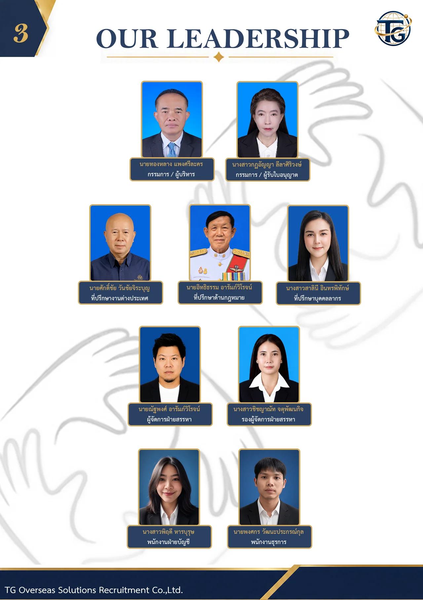
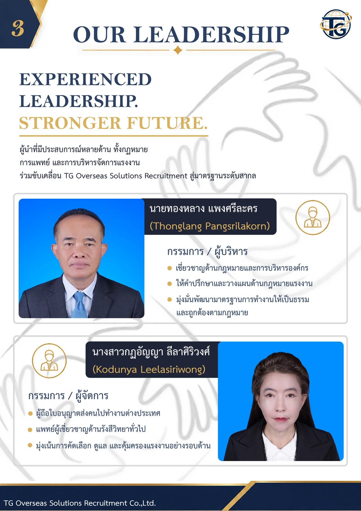
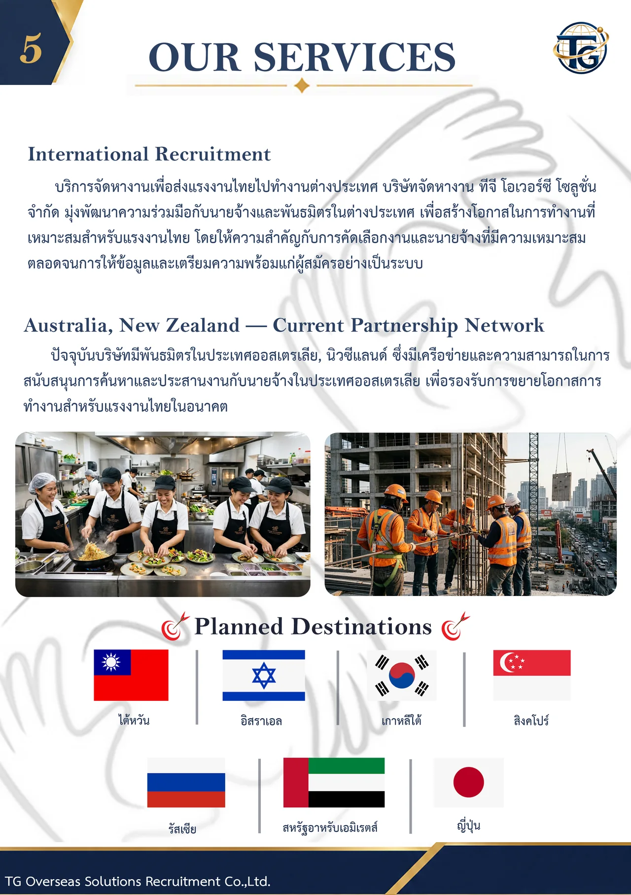
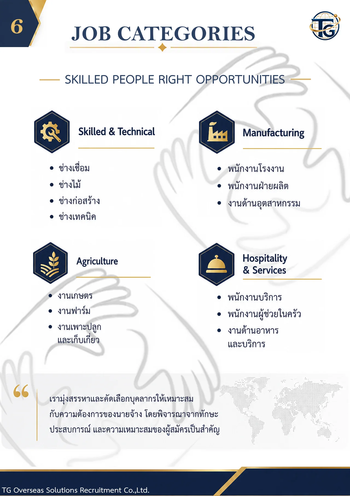
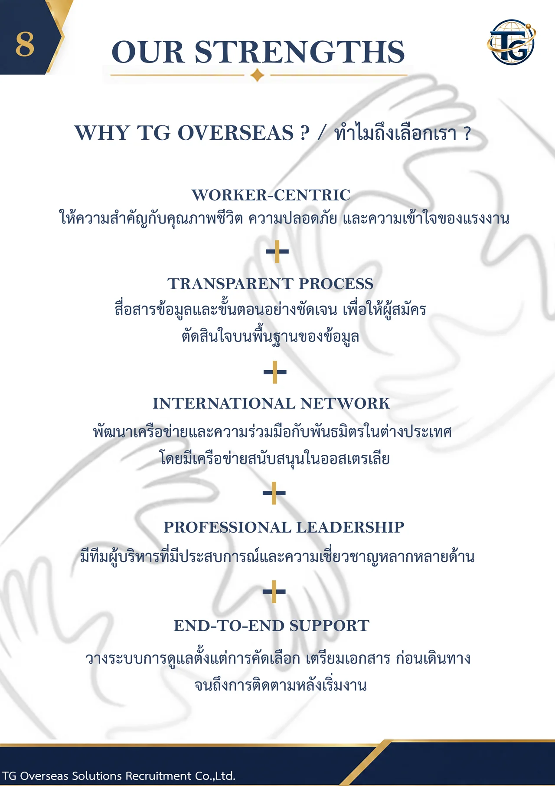
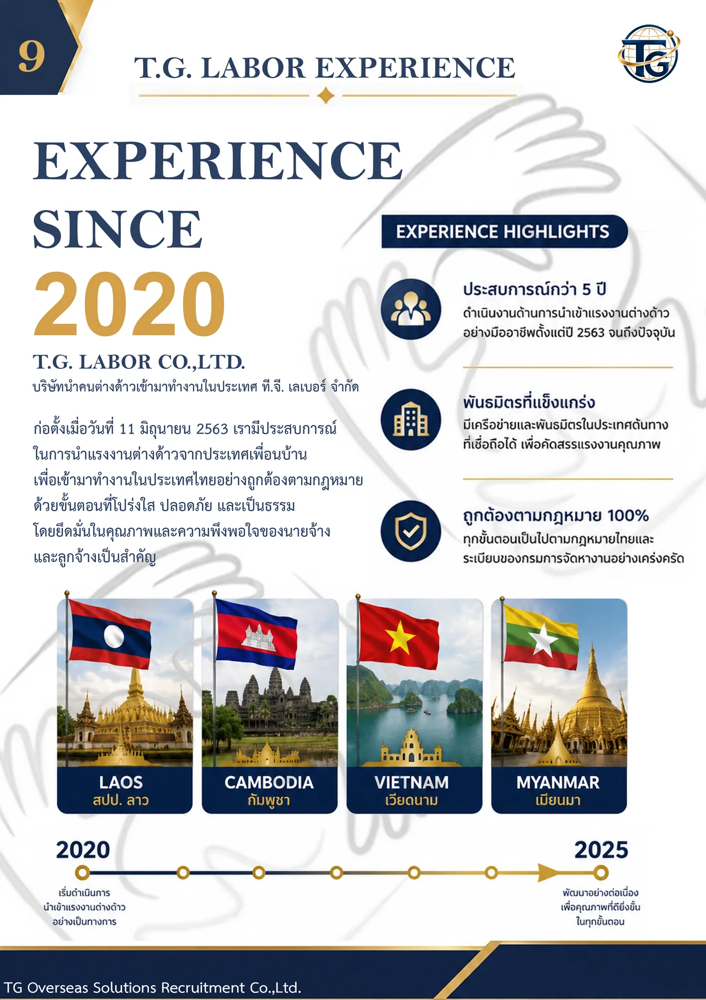
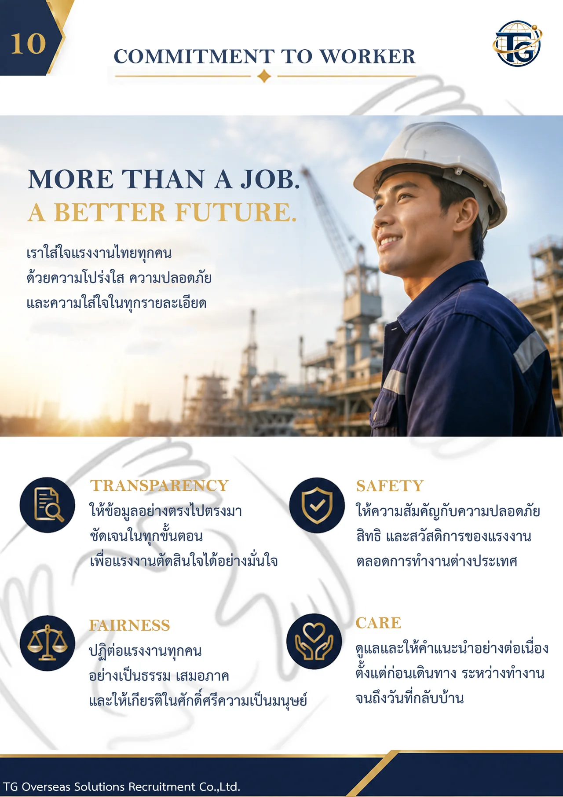
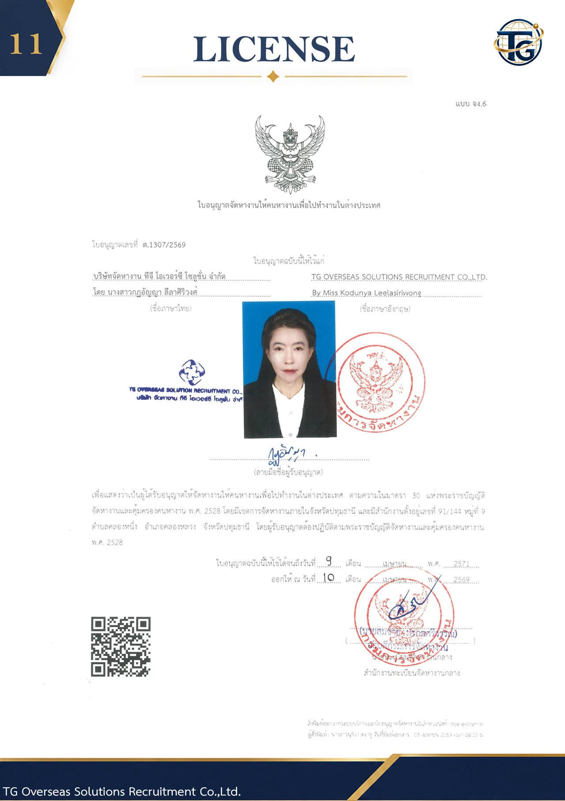

โปรไฟล์บริษัท
รู้จักเราให้มากขึ้นก่อนตัดสินใจ ประวัติ ทีมผู้บริหาร ประสบการณ์ต่างประเทศ และใบอนุญาต รวมไว้ในเล่มเดียว เปิดพลิกอ่านได้เลย หรือดาวน์โหลดเป็น PDF












คลิกที่หน้ากระดาษ ลากมุม หรือกดปุ่มลูกศรบนคีย์บอร์ดเพื่อพลิกหน้าปัดซ้าย-ขวาเพื่อพลิกหน้า แตะแว่นขยายเพื่ออ่านตัวอักษรเล็ก